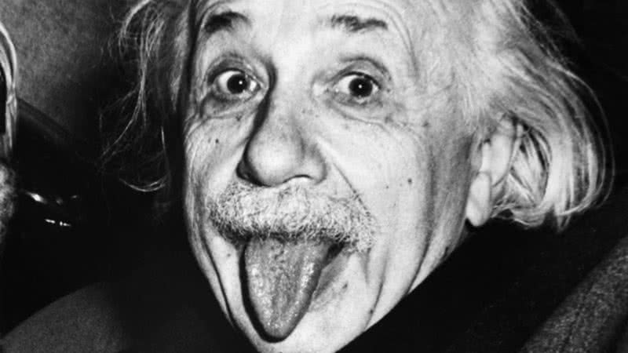

Naruto Uzumaki é o protagonista da série de mangá e anime Naruto, criada por Masashi Kishimoto. Ele é um ninja da Vila Oculta da Folha (Konohagakure) que, desde o nascimento, carrega dentro de si a Raposa de Nove Caudas (Kurama), um poderoso espírito que foi selado em seu corpo após um ataque devastador à vila. Devido a isso, Naruto cresceu isolado e discriminado pelos moradores, o que moldou sua personalidade e seu desejo de provar seu valor.
Naruto é conhecido por sua determinação inabalável e espírito otimista. Ele é teimoso, impulsivo e, muitas vezes, age sem pensar nas consequências, mas sua coragem e lealdade aos amigos sempre se destacam. Mesmo enfrentando dificuldades, Naruto nunca perde sua vontade de lutar por seus sonhos, o principal sendo se tornar Hokage (líder da vila) para ganhar o respeito e reconhecimento de todos.
"A mente que se abre a uma nova ideia jamais voltará ao seu tamanho original."
| Ano | Conquista |
|---|---|
| 1905 | Publicação do artigo sobre a Teoria da Relatividade Restrita |
| 1921 | Prêmio Nobel de Física pela explicação do efeito fotoelétrico |
| 1933 | Exílio nos Estados Unidos devido ao regime nazista |